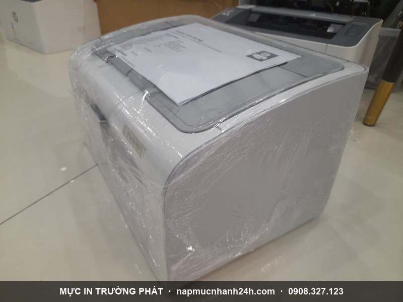
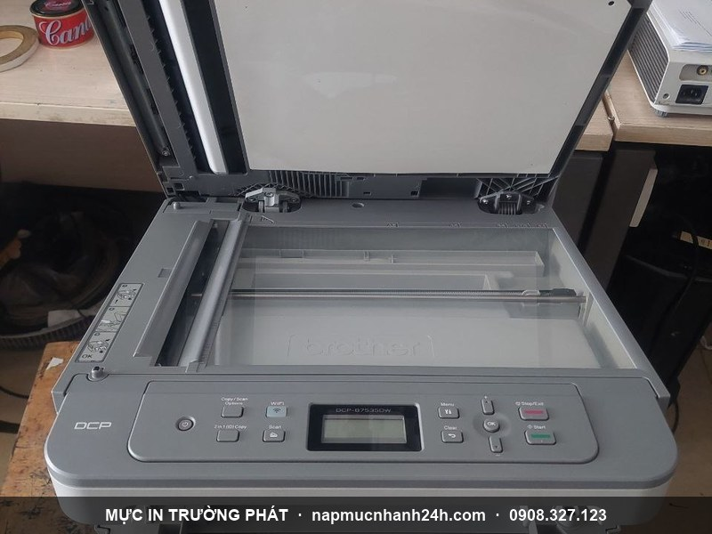

Sửa máy in tận nơi TP.HCM - khắc phục mọi sự cố máy in 24/7
Mực In Trường Phát nhận sửa chữa máy in tận nơi trên toàn TP.HCM cho tất cả các hãng HP, Canon, Epson, Brother, Panasonic, Oki, Lexmark, Samsung, Ricoh, Toshiba. Kỹ thuật viên đến tận nhà/văn phòng, kiểm tra và báo giá trước khi sửa - chỉ tiến hành khi khách đồng ý. Trường hợp bất khả kháng mới mang máy về công ty. Bảo hành 1 tháng, hỗ trợ 24/7 kể cả thứ 7, chủ nhật và lễ.
Hotline gọi ngay: 0908.327.123 · 0819.007.394 (Zalo cả 2 số) · Cố định 028.6271.1252
Các lỗi máy in Trường Phát sửa tận nơi

- Kẹt giấy - máy kéo giấy không lên, kéo 1 lần 2-3 tờ, lên nửa tờ rồi ngưng.
- In ra giấy trắng, in mất dòng, mất chữ, in lem mực hoặc mờ.
- Không lên nguồn, không báo điện, chập điện, sét đánh, có mùi khét.
- Máy kêu to, kêu ù ù, ồn bất thường khi in.
- Máy Epson chớp đèn đỏ luân phiên, không nhận lệnh in.
- Máy in màu sai màu, thiếu màu, in không đẹp (laser màu + phun màu).
- Không nhận lệnh in - lỗi driver, lỗi print spooler tự tắt.
- Xem thêm: tổng hợp các lỗi máy in thường gặp và cách xử lý máy in Canon bị kẹt giấy.
Hướng dẫn xử lý lỗi máy in theo hãng & mã lỗi
Trường Phát tổng hợp cách khắc phục các lỗi phổ biến theo từng hãng - anh chị tự xử lý được thì đỡ tốn công, không được thì gọi kỹ thuật tới tận nơi:
- Canon: máy in Canon kẹt giấy · reset Canon G1000/G2000/G3000 báo lỗi 5B00 tràn mực thải
- HP: reset mực máy in HP 107/135/137 vĩnh viễn · in laser bị lem mực
- Brother: máy in Brother báo Replace Toner
- Epson: thay ruy băng máy in kim Epson LQ310/300/2190
- Xerox: reset máy in Xerox P115 báo đèn đỏ
- Máy photocopy Toshiba / Ricoh: khắc phục lỗi thường gặp máy photocopy Toshiba · bảng tra mã lỗi SC Ricoh Aficio · sửa máy photocopy tận nơi
- Lỗi Windows / kết nối: sửa lỗi Print Spooler tự tắt · tổng hợp các lỗi máy in thường gặp
Quy trình sửa máy in tận nơi 5 bước
- Tiếp nhận yêu cầu qua hotline/Zalo, tư vấn sơ bộ và hẹn giờ.
- Kiểm tra tổng quát toàn bộ máy + linh kiện, xác định đúng lỗi.
- Báo giá minh bạch - chỉ sửa khi khách đồng ý tình trạng máy và chi phí.
- Sửa + vệ sinh sạch sẽ trong ngoài, test máy kỹ trước khi giao.
- Bảo hành - lỗi tái phát trong thời gian bảo hành sửa lại miễn phí.
Trường hợp cần máy móc chuyên dụng phải mang về công ty: Trường Phát làm biên nhận ghi rõ lỗi, báo giá linh kiện thay thế, hẹn giờ giao máy và thanh toán khi nhận máy.
Bảng giá linh kiện thay thế tham khảo
| STT | Tên linh kiện máy in | Giá | Bảo hành |
|---|---|---|---|
| 1 | Gạt lớn, gạt nhỏ máy in 12A, 35A, 49A | 80.000đ | 1 lần bơm |
| 2 | Gạt mực máy in Samsung, Panasonic, Xerox | 150.000đ | 1 tháng |
| 3 | Trục sạc, trục từ máy in 12A, 35A | 120.000đ | 1 lần nạp |
| 4 | Bao lụa 12A, 35A | 350.000đ | 1 tháng |
| 5 | Quả đào máy in HP, Canon | 150.000đ | 1 tháng |
| 6 | Ruy băng Epson LQ 300, LQ 310 | 120.000đ | 1 tháng |
| 7 | Drum 12A/35A/49A/05A (DUC) | 150.000đ | 1 tháng |
| 8 | Drum 12A, 35A (MITSU) | 180.000đ | 1 tháng |
| 9 | Drum Brother / Samsung / Panasonic (các loại) | 220.000 - 320.000đ | 1 tháng |
| 10 | Sửa máy mất nguồn | 250.000 - 350.000đ | 1 tháng |
| 11 | Máy Epson báo đèn đỏ luân phiên | 120.000 - 200.000đ | 1 tháng |
Mỗi đời máy, dòng máy có giá linh kiện và chi phí sửa khác nhau. Gọi 0908.327.123 báo model máy để được giá chính xác. Tham khảo thêm bảng giá nạp mực đầy đủ.
Vì sao chọn dịch vụ sửa máy in Trường Phát?
- 9 năm kinh nghiệm sửa chữa máy in mọi hãng, mọi dòng.
- Có mặt trong ngày tại nội thành TP.HCM, ưu tiên Tân Bình, Tân Phú, Bình Tân, Bình Thạnh, Phú Nhuận, Q1-Q12.
- Báo giá trước khi sửa - không phát sinh chi phí ngoài thỏa thuận.
- Sửa xong test kỹ, vệ sinh máy sạch sẽ trước khi giao.
- Bảo hành 1 tháng - lỗi tái phát sửa lại miễn phí.
- Hỗ trợ 24/7 kể cả lễ tết, phụ phí ngoài giờ minh bạch.
Sửa máy in tận nơi theo quận tại TP.HCM
Trường Phát có kỹ thuật sửa máy in đặt theo khu vực - sửa máy in tận nơi khắp các quận TP.HCM trong ngày: Quận 1, 3, 4, 5, 6, 7, 8, 10, 11, 12, Bình Tân, Bình Thạnh, Tân Bình, Tân Phú, Phú Nhuận, Gò Vấp, Bình Chánh, TP Thủ Đức (Q2, Q9).
Khu vực chủ lực có kỹ thuật thường trực, sửa + nạp mực trong cùng một lần đến:
Cần nạp mực kèm theo? Kỹ thuật xử lý cả sửa chữa và nạp mực máy in tận nơi trong cùng một lần đến - tiết kiệm thời gian.

Liên hệ sửa máy in nhanh
- Hotline 1: 0908.327.123 (Zalo · Telegram)
- Hotline 2: 0819.007.394 (Zalo · Telegram)
- Cố định: 028.6271.1252
- Hoạt động: 24/7, kể cả lễ tết · Phục vụ: toàn bộ TP.HCM
Gọi báo hãng máy + tình trạng lỗi để Trường Phát cử kỹ thuật phù hợp và báo giá nhanh.